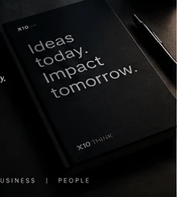

Useful thinking about software, AI and digital business.
Short, practical notes on product decisions, engineering trade-offs and technology that has to work in the real world.

Read the reasoning, not the hype.
These articles are part of the website itself, with one verified public X10 Think launch article linked from our earlier publishing channel.
Business before technology: a better starting point for software
Why defining the operational change first usually leads to a clearer scope and a more useful product.
Read article → AI SYSTEMSWhere AI belongs in a business workflow
A practical framework for adding assistance where it creates leverage without turning the whole process into a black box.
Read article → ENGINEERINGMaintainable systems are a business feature
Why understandable architecture, clear ownership and simple operations matter after launch.
Read article → X10 THINK · JUL 2026Welcome to X10 Think — Building Businesses Through Digital Innovation
The public introduction to X10 Think, its service areas, vision and business-first technology direction.
Read verified public post ↗Good projects start with better questions.
If you are evaluating a software, AI or automation idea, bring the workflow and the outcome you need.